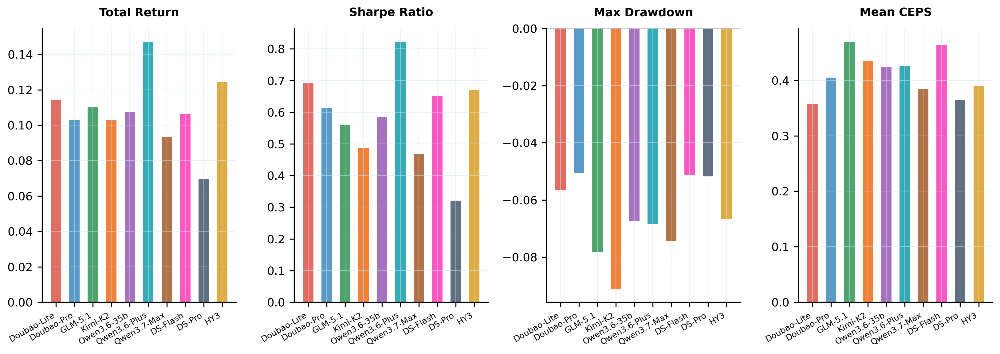
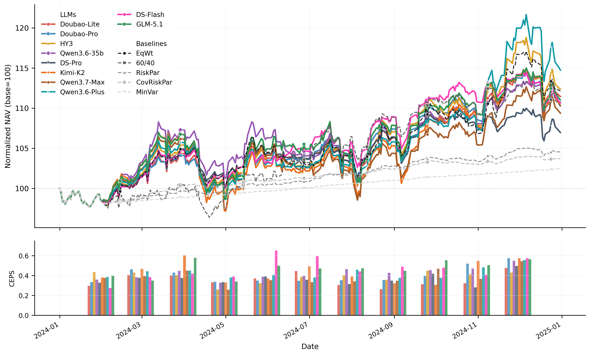
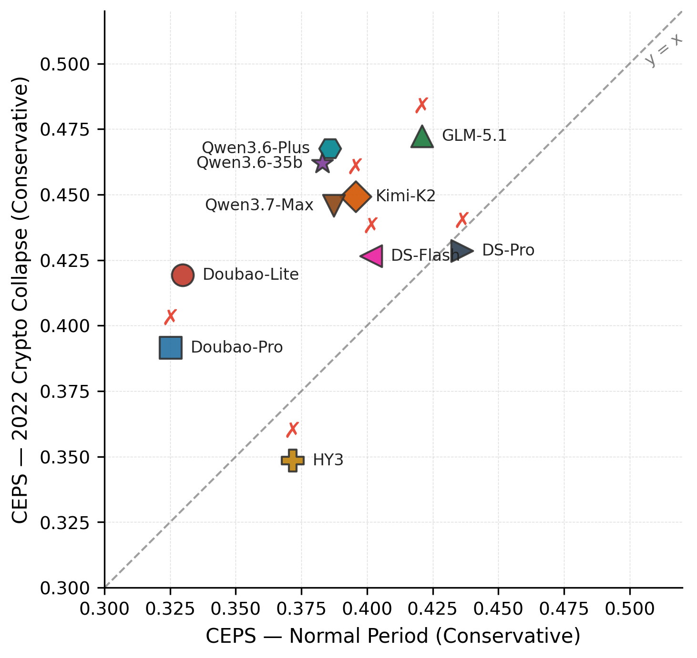
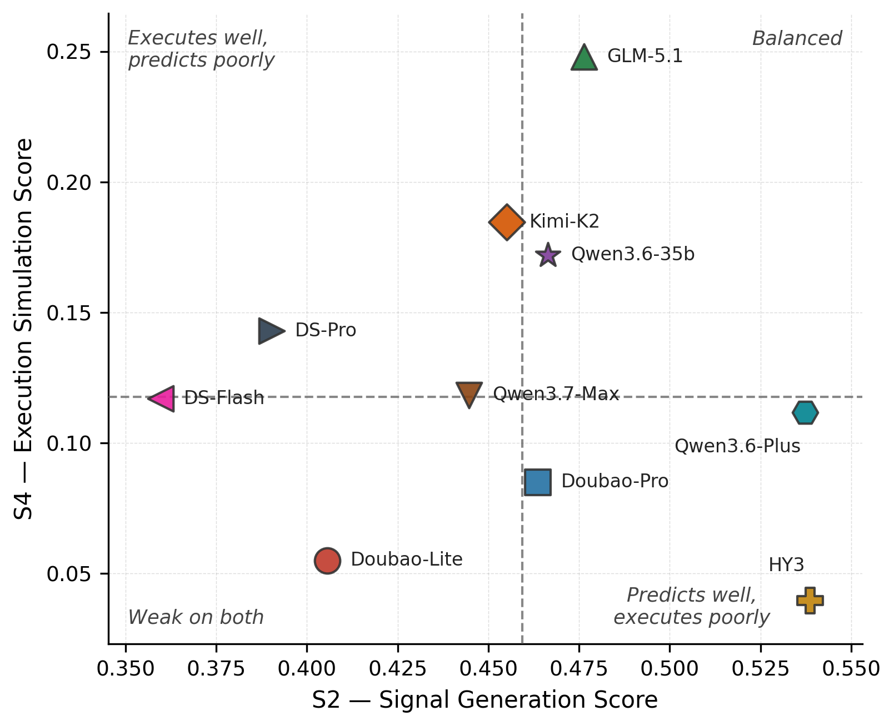

Overview of PortBench. We first collect the Market Base Dataset
(183 instruments × 6 asset classes, 2015–2025), then build a
dual-layer evaluation framework on top:
a static QA layer (6,269 correlation-based pairs) and a dynamic five-stage pipeline,
jointly assessed under three risk profiles and three historical stress regimes.
27/30LLM–profile combinations underperform a naive equal-weight allocation on Sharpe ratio
6/10LLMs fail the Conservative stress gate, all during the 2022 Crypto Collapse
ρ = −0.32Spearman rank correlation between static QA accuracy and pipeline CEPS
Background & Motivation
Large language models (LLMs) have shown strong performance across diverse financial tasks,
yet portfolio management (PM) remains poorly benchmarked. Existing benchmarks
ignore cross-asset correlation structures and fail to evaluate the complete PM
decision pipeline, missing the compounding errors that arise as reasoning propagates
through sequential allocation stages.
We introduce PortBench with the following key contributions:
Dataset
Market Base Dataset
183 instruments across 6 asset classes over 10 years (2015–2025), forming a single auditable source for all benchmark components.
Static Layer
6,269 QA Pairs
Across 7 correlation-based task templates, auto-generated without human annotation and extensible to new periods and assets.
Dynamic Layer
Five-Stage Allocation Pipeline
Mirroring the full PM decision cycle, evaluated under 3 investor risk profiles and 3 historical stress regimes.
Metrics
Dual-Layer Correlation Score + CEPS
Measuring inter-class hedging and intra-class concentration, plus quantifying how reasoning errors compound across pipeline stages.
Evaluation framework. Static QA layer (Top): seven task templates generated automatically from
historical data. Dynamic five-stage pipeline (Bottom): executed sequentially at every rebalance
date under three investor profiles and three stress regimes.
Interactive Browser
The sections below let you interactively explore each layer of the PortBench framework.
Start with the raw Market Base Dataset, then dive into the two evaluation layers
that run on top of it.
Market Base Dataset
The Market Base Dataset covers 183 unique financial instruments spanning 2015–2025
across six heterogeneous asset classes, collected from Yahoo Finance, FRED, and Kaggle.
Equities exhibit the broadest coverage (126 tickers), reflecting the diversity of broad-market,
sector, and factor ETFs. Commodities (16) and bonds (15) provide representative cross-class
hedging opportunities; cryptocurrency (12) captures major and mid-cap digital assets;
real estate (10) and cash equivalents (4) round out the defensive allocation universe.
Correlation analysis reveals that inter-class average correlations are generally low while
intra-class correlations are strongly positive.
True diversification requires crossing asset class boundaries, not merely spreading across
tickers within the same class, directly motivating the two-layer correlation scoring design.
Interactive Market Snapshot
183 instruments across 6 asset classes, daily data 2015–2025.
Each monthly snapshot includes macro indicators, per-asset price summaries, and cross-class correlations.
Select a date to see the full snapshot.
The evaluation framework has two complementary layers.
Switch between the tabs below to explore the QA Dataset and the Pipeline Evaluation in detail.
Every component is objective, traceable, and scalable: QA pairs are auto-generated without
human annotation, and pipeline ground truths are validated against realized future returns
withheld from model prompts, eliminating oracle leakage and enabling seamless extension to
new periods and assets.
6,269 correlation-aware QA pairs across 7 task templates (T1–T7),
spanning complexity levels 1–4 and three market regimes.
Select a template to browse sample question–answer pairs.
Loading QA data…
At each rebalance date a MarketSnapshot is constructed and passed to the LLM
for five-stage evaluation (S1–S5).
Select a model, market scenario, and date to see the model’s input and stage-by-stage output vs. ground truth.
Loading pipeline data…
Evaluation Details
At a Glance
10 LLMs evaluated·5 classical baselines·6 asset classes·183 financial instruments·6,269 QA pairs·10 years of data (2015–2025)
Five-Stage Decision Pipeline
At each rebalance date the LLM executes S1–S5 sequentially.
LLMs and classical baselines share the identical backtest environment for controlled comparison.
S1 · Market Interpretation
Continuous sentiment views vi ∈ [−1,+1] per asset.
Scored as 1 − MAE(views, ground-truth) / 2.
S2 · Signal Generation
Views discretized into buy / hold / sell signals (thresholds ±0.2).
Scored as fraction of assets with the correct direction.
S3 · Weight Optimization
Portfolio weights scored by the two-layer correlation score:
weight accuracy (L₁ to signal-constrained max-Sharpe optimum, α = 0.5)
+ correlation structure (intra-class concentration penalty + inter-class hedging credit).
Ground truth computed from realized future returns with strict PiT safety.
Prior benchmarks obscure early reasoning failures by averaging scores.
CEPS penalizes error cascades, a strong stage followed by a weak one, more heavily
than uniform mediocrity, capturing the operational reality that a perfectly interpreted market
view is worthless if signal generation immediately fails.
Ground truth for all LLM-scored stages is derived from realized future returns
withheld from prompts, guaranteeing point-in-time (PiT) safety throughout.
CEPS: Cascade vs. Uniform Mediocrity
Two models with identical average stage scores (0.526) receive different CEPS scores because one cascades errors while the other is uniformly mediocre.
The cascade penalty (lambda=0.1) reduces Model A's CEPS by 0.086, penalizing the sharp S1 to S2 and S3 to S4 drops that indicate brittle error propagation. Model B's uniform mediocrity incurs no penalty.
Investor Profiles & Stress Regimes
CEPS is evaluated under three investor risk profiles with escalating risk tolerance,
and back-tested across three historical stress regimes to assess robustness
when market conditions deteriorate sharply.
🛡️
Conservative
Equity + Crypto≤ 40%
Bond + Cash≥ 40%
Max Drawdown≤ 10%
Daily VaR (95%)≤ −1.0%
⚖️
Balanced
Equity + Crypto≤ 65%
Bond + Cash≥ 20%
Max Drawdown≤ 20%
Daily VaR (95%)≤ −2.0%
🚀
Aggressive
Equity + Crypto≤ 90%
Bond + Cash≥ 5%
Max Drawdown≤ 35%
Daily VaR (95%)≤ −4.0%
Each profile is tested under three historical stress regimes:
2015
China Shock
Aug 2015 – Feb 2016
liquidity-driven
2020
COVID Crash
Feb 2020 – May 2020
pandemic-driven
2022
Crypto Collapse
May 2022 – Dec 2022
monetary-tightening-driven
A model passes the stress gate for a given profile if its maximum drawdown across all three
regimes stays within the profile's tolerance.
Six of ten models fail the Conservative stress gate, all during the 2022 Crypto Collapse,
where small crypto exposures compliant with allocation caps amplify into double-digit drawdowns
(compliance trap: every process constraint satisfied, outcome safety violated).
Results & Insights
Key Findings
📉
LLMs Fail to Beat Equal-Weight
Across 30 model–profile combinations,
27 / 30 underperform a naive 1/N equal-weight baseline on Sharpe ratio.
High-quality market interpretation does not guarantee better portfolios.
Only Qwen3.6-Plus (Balanced) simultaneously beats Equal-Weight and passes all stress gates.
⚠️
Stress Rankings Diverge from Normal-Period
Normal-period CEPS rankings do not predict stress survival.
6 / 10 LLMs fail the Conservative stress gate — all during the 2022 Crypto Collapse.
Compliant allocations still produce double-digit drawdowns via cross-asset contagion.
Normal-period benchmarks systematically overestimate robustness.
🔀
QA Performance ≠ Pipeline Competence
Spearman rank correlation between QA accuracy and pipeline CEPS is
ρ = −0.32.
GLM-5.1 ranks 7th in QA yet 1st in CEPS; Kimi-K2.6 ranks last in QA yet 3rd in CEPS.
QA measures isolated recall; CEPS measures sustained reasoning across five causally dependent stages.
Pipeline Performance: All Three Profiles
🔑 Key Finding
Across 30 model–profile combinations (10 LLMs × 3 profiles),
27 of 30 underperform a naive 1/N equal-weight allocation on Sharpe ratio.
This holds despite strong S1–S3 pipeline scores, since high-quality market
interpretation and signal generation do not guarantee portfolios that outperform a
rule-based baseline. Only Qwen3.6-Plus (Balanced) simultaneously beats Equal-Weight
and passes all stress gates.
The table below reports per-stage scores, CEPS, and financial outcomes for all ten LLMs
and five classical baselines across Conservative / Balanced / Aggressive profiles (normal period, 2024).
Bold = column best within each profile.
ConservativeBalancedAggressive
Profile
Model
Pipeline Scores
CEPS
Financial Outcomes
Gate
S1
S2
S3
S4
S5
Sharpe
Ret%
MaxDD%
Vol%
Cons.
DeepSeek-V4-Pro
.766
.406
.752
.173
.483
.436
0.217
5.49
−3.53
7.61
✗
GLM-5.1
.769
.421
.751
.224
.561
.421
0.764
9.54
−3.14
8.14
✗
DeepSeek-V4-Flash
.764
.390
.766
.219
.386
.402
0.080
4.54
−7.43
8.24
✗
Kimi-K2.6
.791
.438
.758
.177
.319
.396
0.576
9.51
−4.90
9.64
✗
Qwen3.7-Max
.750
.387
.746
.158
.395
.387
0.450
7.36
−3.00
6.86
✓
Qwen3.6-Plus
.815
.466
.752
.128
.339
.386
0.548
9.13
−5.03
9.43
✓
Qwen3.6-35B-A3B
.748
.445
.749
.177
.347
.383
−0.033
3.58
−5.54
11.10
✓
Hunyuan3-Preview
.804
.527
.759
.029
.256
.372
0.621
9.95
−5.45
10.06
✗
Doubao-Seed-2.0-Lite
.768
.370
.752
.060
.339
.330
0.462
7.17
−3.01
8.28
✓
Doubao-Seed-2.0-Pro
.781
.449
.744
.094
.263
.325
0.708
8.85
−3.05
7.60
✗
Bal.
GLM-5.1
.774
.427
.751
.161
.695
.470
0.560
11.00
−7.81
12.17
✗
DeepSeek-V4-Flash
.763
.414
.761
.214
.618
.463
0.651
10.64
−5.13
9.56
✗
Kimi-K2.6
.784
.444
.764
.208
.456
.434
0.488
10.30
−9.13
12.91
✗
Qwen3.6-Plus ★
.789
.519
.761
.151
.370
.426
0.823
14.72
−6.84
12.15
✓
Qwen3.6-35B-A3B
.770
.461
.758
.111
.517
.424
0.586
10.73
−6.74
11.01
✓
Doubao-Seed-2.0-Pro
.784
.448
.744
.134
.395
.405
0.613
10.31
−5.04
9.71
✗
Hunyuan3-Preview
.793
.543
.764
.032
.305
.389
0.669
12.42
−6.67
11.99
✗
Qwen3.7-Max
.777
.432
.758
.123
.330
.384
0.467
9.35
−7.43
11.28
✓
DeepSeek-V4-Pro
.765
.405
.749
.123
.283
.365
0.321
6.95
−5.18
9.02
✗
Doubao-Seed-2.0-Lite
.772
.366
.755
.053
.392
.357
0.692
11.43
−5.65
10.05
✓
Agg.
GLM-5.1
.763
.438
.748
.262
.607
.510
0.710
15.56
−10.97
14.22
✓
Qwen3.7-Max
.786
.485
.773
.109
.646
.463
0.621
16.20
−14.85
17.11
✓
Qwen3.6-Plus
.775
.527
.767
.073
.469
.445
0.674
16.23
−12.59
16.09
✓
DeepSeek-V4-Flash
.762
.383
.758
.160
.473
.408
0.679
15.78
−11.42
14.88
✓
DeepSeek-V4-Pro
.736
.390
.755
.174
.482
.396
0.752
14.45
−6.88
11.70
✓
Kimi-K2.6
.762
.431
.758
.144
.359
.396
0.586
15.13
−15.83
17.43
✓
Hunyuan3-Preview
.778
.519
.758
.044
.348
.393
0.652
12.54
−6.87
13.17
✓
Doubao-Seed-2.0-Lite
.770
.451
.758
.083
.293
.389
0.705
16.55
−11.49
15.77
✓
Qwen3.6-35B-A3B
.778
.452
.756
.130
.200
.388
0.658
15.33
−10.83
15.48
✓
Doubao-Seed-2.0-Pro
.755
.422
.756
.046
.260
.382
0.615
13.75
−9.47
14.22
✓
Base
Equal-Weight (EqW)
N/A
N/A
N/A
N/A
N/A
N/A
0.740
12.13
−5.09
10.25
N/A
60/40
N/A
N/A
N/A
N/A
N/A
N/A
0.651
10.17
−4.27
8.82
N/A
Risk Parity
N/A
N/A
N/A
N/A
N/A
N/A
0.111
4.56
−2.02
3.24
N/A
Cov. Risk Parity
N/A
N/A
N/A
N/A
N/A
N/A
−0.147
3.71
−2.02
2.98
N/A
Min-Variance
N/A
N/A
N/A
N/A
N/A
N/A
−0.601
2.45
−2.02
2.71
N/A

Risk-adjusted return metrics (Sharpe, total return, max drawdown, CEPS) under the Balanced profile.

Portfolio NAV trajectories (2024). Shaded band = range across all LLMs; dashed lines = classical baselines.
Stress Regime Results
🔑 Key Finding
Normal-period CEPS rankings do not predict stress survival.
Models with strong normal-period CEPS rankings can collapse under historical stress, and
the correlation between normal and stress-period scores is weak.
Ranking models by calm-market performance alone is insufficient and potentially
misleading for real-world deployment. Benchmarks that evaluate only under i.i.d. market
conditions systematically overestimate model robustness.
More troubling still, 6 of 10 LLMs fail the Conservative stress gate,
all during the 2022 Crypto Collapse. These models satisfy every allocation constraint
(equity/crypto caps, bond/cash floors, drawdown/VaR limits) yet still suffer double-digit
drawdowns. Small, compliant crypto exposures amplify into portfolio-level losses because
the models fail to anticipate cross-asset contagion.
Checking procedural boxes does not guarantee outcome-level safety.
Stress-regime evaluation is not optional, as it is the only layer that reveals which
models are genuinely safe.
The stress gate is defined as follows: a model passes for a given profile if its
maximum drawdown across all three historical stress regimes stays within the profile's tolerance.
The images below show aggregate stress performance across all models and profiles.
Max drawdown across three stress regimes (worst case, all profiles). Six of ten LLMs fail Conservative.

Normal-period vs. stress-period CEPS (2022, Conservative). High normal scores do not predict stress survival.
Takeaway: Stress-regime evaluation is the only layer that reveals which models are
genuinely safe for deployment; normal-period benchmarks alone systematically overestimate robustness.
Static QA Evaluation Results
The rank dissociation above raises a natural question: where do different models excel or struggle
within the QA layer itself? The table below breaks down per-template accuracy, revealing
sharp divergence between formula-driven tasks (T4, T5) and judgment-driven ones (T1, T2, T6, T7).
Per-template accuracy (full & restricted covariance conditions), formula vs. judgment averages,
and accuracy by market regime. Bold = column best. Pink rows = Mean < 0.65.
Model
Per-Template (Full)
Mean
Restricted
Task Type
Market Regime
T1
T2
T3
T4
T5
T6
T7
T4r
T5r
F
J
Bull
Bear
Side.
DeepSeek-V4-Flash
.520
.843
.945
1.00
.932
.652
.843
.819
.975
.860
.966
.715
.827
.823
.812
Qwen3.7-Max
.500
.859
.951
1.00
.954
.724
.742
.819
1.00
.990
.977
.706
.814
.863
.810
DeepSeek-V4-Pro
.520
.837
.963
1.00
.992
.652
.760
.818
1.00
.660
.996
.692
.844
.846
.802
Doubao-Seed-2.0-Lite
.460
.798
.957
.956
.897
.810
.747
.804
.961
.940
.927
.704
.780
.846
.806
Doubao-Seed-2.0-Pro
.440
.847
.963
.991
.912
.824
.530
.787
.979
.923
.952
.660
.764
.806
.792
Qwen3.6-Plus
.440
.858
.968
1.00
.804
.640
.768
.783
1.00
.810
.902
.677
.799
.801
.771
GLM-5.1
.440
.855
.964
1.00
.421
.882
.738
.757
1.00
.531
.711
.729
.778
.765
.746
Qwen3.6-35B-A3B
.460
.808
.961
1.00
.230
.564
.763
.684
1.00
.320
.615
.649
.714
.729
.662
Hunyuan3-Preview
.460
.386
.336
.975
.958
.468
.783
.624
.982
.974
.967
.524
.664
.663
.597
Kimi-K2.6
.420
.422
.493
.956
.280
.684
.320
.511
.978
.710
.618
.462
.556
.531
.487
F = mean(T4,T5) formula-driven; J = mean(T1,T2,T6,T7) judgment-driven.
Restricted (T4r, T5r) withholds the covariance matrix:
7 of 10 models perform better without it, confirming format matching rather than genuine numerical reasoning.
QA–Pipeline Rank Dissociation
🔑 Key Finding
QA performance does not imply pipeline competence.
The Spearman rank correlation between QA accuracy and pipeline CEPS is ρ = −0.32.
GLM-5.1 ranks 7th in QA yet 1st in CEPS; Kimi-K2.6 ranks last in QA yet 3rd in CEPS.
Doubao-Seed-2.0-Lite ranks 4th in QA but last in CEPS, answering static questions correctly
yet failing to translate that knowledge into executable portfolio decisions.
QA measures isolated factual recall; CEPS measures sustained reasoning across five causally
dependent stages. The dissociation is driven by S4 execution fidelity: models that ace
formula-driven tasks (T4/T5) often collapse when translating signals into actual orders.
Model
QA Mean
QA Rank
CEPSbal
CEPS Rank
ΔRank
DeepSeek-V4-Flash
.819
1
.463
2
−1
Qwen3.7-Max
.819
2
.384
8
−6
DeepSeek-V4-Pro
.818
3
.365
9
−6
Doubao-Seed-2.0-Lite
.804
4
.357
10
−6
Doubao-Seed-2.0-Pro
.787
5
.405
6
−1
Qwen3.6-Plus
.783
6
.426
4
+2
GLM-5.1
.757
7
.470
1
+6
Qwen3.6-35B-A3B
.684
8
.424
5
+3
Hunyuan3-Preview
.624
9
.389
7
+2
Kimi-K2.6
.511
10
.434
3
+7

S2 (signal) vs. S4 (execution). Hunyuan3-Preview leads S2 yet collapses in S4: strong signals, no execution.
Profile Alignment Score (PAS) per model. GLM-5.1 applies a nearly identical allocation regardless of risk profile (σ = 0.014).
Citation
@article{zhao2026portbench,
title={PortBench: A Correlation-Aware, Full-Pipeline Benchmark for LLM-Driven Portfolio Management},
author={Zhao, Yuxuan and Chen, Sijia and Su, Ningxin},
journal={arXiv preprint arXiv:2605.27887},
year={2026}
}